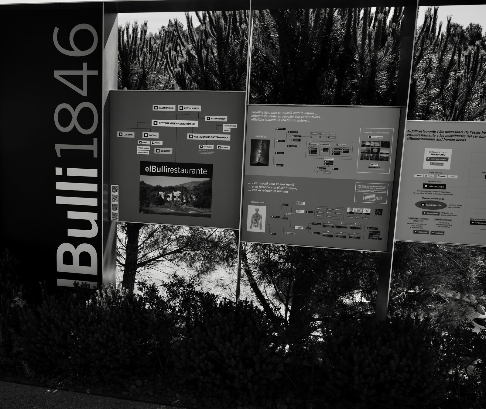
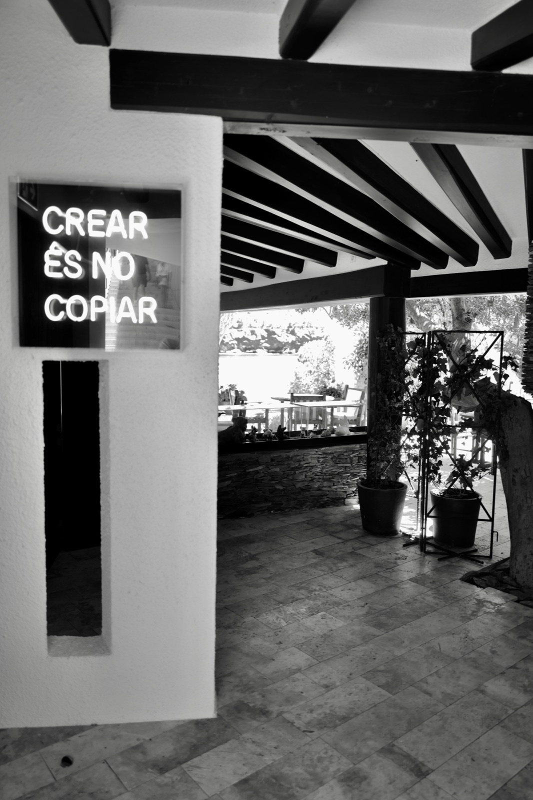
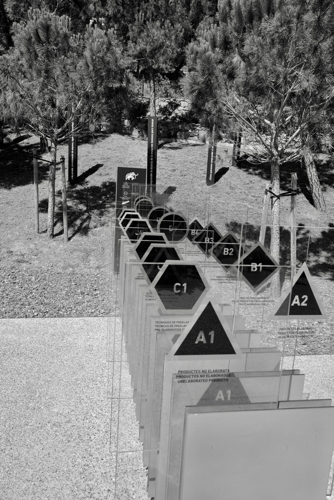
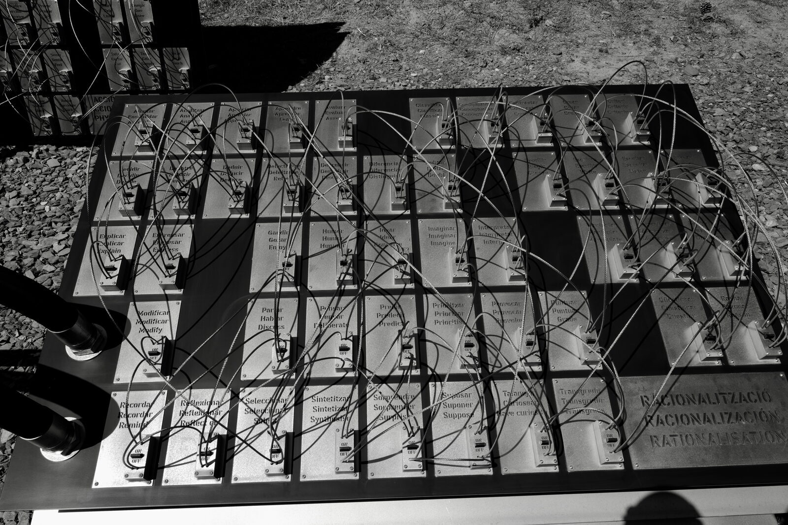
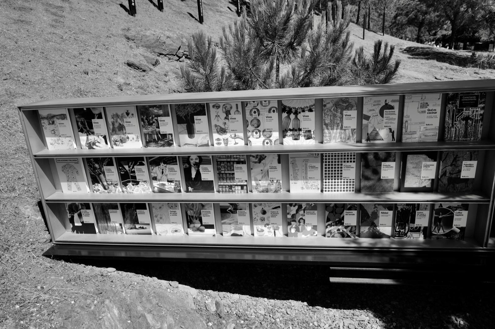
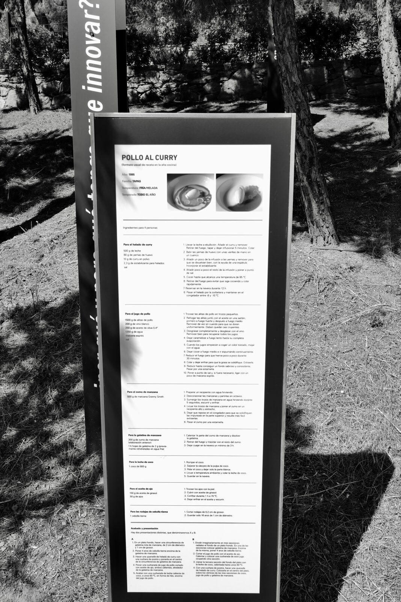
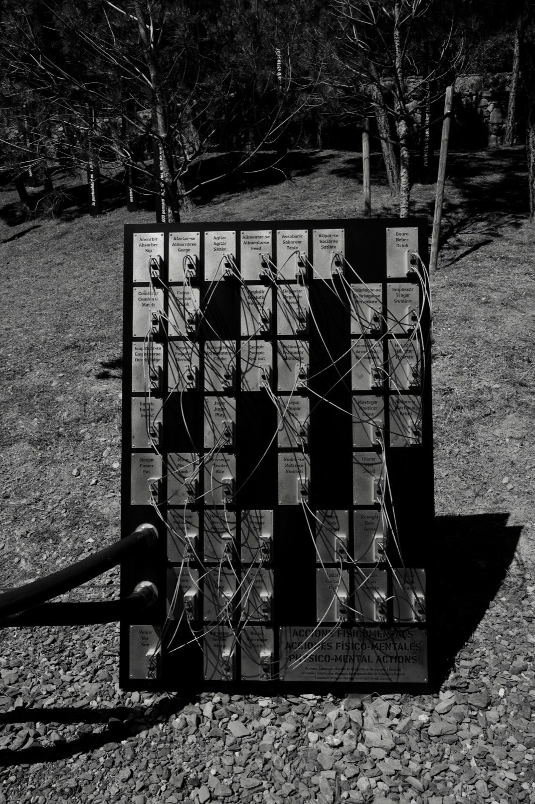

- What is actually open at elBulli this summer — a museum on the old restaurant site, not a kitchen serving dinner — and why that distinction is the whole point.
- The Sapiens method in plain terms: Ferran Adrià's “understand first, act later” loop, and the Bullipedia encyclopedia it produces.
- How to run that same method on a charter week, so the menu reads as one connected idea told over seven themes — not seven unrelated nights.
The cove is open again — but not for dinner
The most influential kitchen of the last century opens its doors again this summer. It will not cook you a thing.
Drive the broken road north of Roses, into the Cap de Creus, and you reach Cala Montjoi — the rock-walled cove where elBulli spent fifty years turning dinner into something closer to a question. From 1 May to 12 October 2026 the building is open again, as it has been each summer since 2023. But elBulli stopped serving food on 30 July 2011 and never started again. What you can visit is elBulli1846 — the old restaurant turned into a museum, billed as the first restaurant on earth to become one. Half the year it is a museum; the other half it closes to the public and becomes elBulliDNA, a working research lab. (We told the story of how that kitchen rewrote cooking here; this is the second act.)
So the doors are open and the stoves are cold. That is not a sad footnote — it is the whole argument Ferran Adrià has been making since he walked away at the top: the legacy worth keeping was never the foam. It was the method.

Here is how most of us reach for a “new” dish: borrow one we admired, swap two ingredients, plate it our way. That is not creating — it is reproducing with a limp. Adrià hit the same ceiling in the 1980s, cooking French classics out of books, until one line from the chef Jacques Maximin re-routed his career: “creativity is not copying.” The question that has driven him since is the one no gadget answers — how do you make something that did not exist before?

Understand first, act later
Adrià's answer wasn't a recipe or a machine. It was a way of thinking, and he gave it a name.
The method is called Sapiens, and its motto is four words: understand first, act later. Before deciding what to cook, you build an honest map of everything known about your subject — and, just as important, what isn't known. You pull that knowledge from every field that touches it, not only the kitchen: the science, the history, the language the trade uses, the culture it grew in. The wager, drawn from systems theory — the study of a thing in its full context rather than in isolation — is that broad, connected understanding beats narrow expertise every time.
Sapiens runs as a repeatable loop, not a one-off study: Order the information (sort by element, goal, priority) → Contextualise it (where, when and why does this exist?) → Classify it so the gaps show — you can now see plainly what you know and what you don't → then Imagine, Create, and finally Understand, which means you can see the whole system and how its parts relate. Then you go round again.


Two guardrails make it more than a flowchart. The first is that systems-theory habit: nothing is studied alone. The second is deliberately uncomfortable — Adrià's expert panels are built to argue. Disagreement is kept alive on purpose, so the work never hardens into dogma, never settles into “the way we've always done it.” The grandmother's inherited wisdom and the scientist's standing doubt, in the same room, refusing to make peace.
The man who deconstructed the Spanish omelette spent his second act trying to deconstruct knowledge itself.
What the Bullipedia actually is
If Sapiens is the operating system, the Bullipedia is what it prints.
Run that method across the whole of gastronomy and you get the Bullipedia (you will also see it written elBullipedia) — the foundation's attempt at the first complete encyclopedia of cooking, creativity and innovation, launched in 2013. Here is the part nearly everyone gets wrong: it is not a free website. The original 2012 dream of an online “gastronomic Wikipedia” was announced and then quietly abandoned. What actually exists is a shelf of roughly 500-page hardback volumes — more than twenty published so far, of a planned set of around fifty — each taking one subject (drinks, wine, coffee, the origins of cooking) and running it through the full Sapiens loop: define the words, map the history, classify everything, convene the arguing panel.
Sapiens is how they think. The Bullipedia is that thinking written down. The method is the engine; the encyclopedia is the exhaust.


Run it on your charter week
This is where it stops being museum talk. The loop fits a galley better than it fits a laboratory.
A charter week is a complex operation run on limited resources with no room for chaos — precisely what Sapiens was built to organise. Before you write a single menu, run the loop on the week itself:
- Order what's fixed against what's free. Allergies, charter length, guest count, the owner's hard no's — these do not move. Almost everything else does. Separate the two before you think about a single dish.
- Contextualise the ground. What is actually landing at this port this week, what is in season in these waters, what the guests loved last trip, what the sea state will let you plate. The cruising ground is half the menu.
- Classify until the gaps show. Lay the week out and the holes appear on their own — the protein you haven't sourced, the course with no acid, the day with nothing for the child aboard. That gap list is your provisioning order.
- Then imagine, build, and step back. Only now do you design — the week as one system, yes, but built as a run of distinct nights, each carrying its own theme.
Give every night one theme and treat it the way a painter treats a colour: chosen for contrast and relief against the nights on either side. A bright, acid-led Tuesday earns a dark, slow-cooked Wednesday; a precise tasting one evening earns a generous, hands-on grill the next. The larder and the through-line hold the week together as one idea — but each dinner reads as its own thing, so by day six, when the nights start to blur for the guest, it still feels like eating in a different restaurant every evening. Unity in the method; variety in the themes.
Adrià's systems-theory rule is the most practical thing he ever said for a galley: nothing is designed in isolation. Guest menu and crew menu, breakfast and dinner, prep and service — treat them as one flow, not separate jobs. It is the same logic as building the guest dish first and deriving the heartier crew version from it: cook once, serve two tiers.
The same loop, two kitchens
Each stage of Adrià's method has a plain galley translation. The levers are identical; only the scale changes.
| Sapiens stage | In Adrià's lab | On your boat |
|---|---|---|
| Order | Sort every known fact by element, goal and priority. | Split the week into fixed (allergies, dates, guest count) and flexible. |
| Contextualise | Place each item in its history, science and culture. | Read the cruising ground: what's landing, what's in season, what the owner loved. |
| Classify | Build a map that exposes the gaps in what is known. | Lay the week out so the holes show — that list is your provisioning order. |
| Imagine & create | Innovate only once the subject is genuinely understood. | Set a theme per night, then design each so the week reads as one idea. |
| Understand | See the whole system and how its parts relate; loop again. | Be able to say, out loud, why each plate is on the menu. |

The proof is not faith — it is the track record. The same lab discipline that produced spherification, hot gels and the foams now sold in every supplier's catalogue is the discipline now producing the Bullipedia, volume by volume. Sapiens has outgrown the kitchen: the foundation has run it with organisations as far from a stove as a bank, a football club and a champagne house, and turned it into stand-alone series — Coffee Sapiens with Lavazza, an eight-volume Wine Sapiens. A method that survives contact with that many fields is a method, not a mood. And the monument to it is open on the cliff at Cala Montjoi right now: 69 installations across nearly 4,000 square metres — a self-guided couple of hours that is, in the end, a museum about how to think.
elBulli did not just cook — it catalogued. Its General Catalogue records all 1,846 creations made between 1983 and 2011, filed into an evolutionary map so you can see the exact season each concept and technique first appeared. That number is why the museum is called elBulli1846. Do the small version: keep a running catalogue of the themes that landed — the acid-led lunch, the one-pot Sunday, the raw-bar night — so a theme that worked this charter becomes next season's starting point instead of a thing you reinvent at midnight.
You know it worked when: the week reads as one idea told over seven themes. A guest could not lift Tuesday's dish onto Friday without it feeling wrong — every plate was built to belong to its night's theme and to the run of the week — and you can name, for each one, why it is there.
Steal the order of operations, not the liquid nitrogen: understand first, act later. Build the week as one system, run it as a sequence of themes, and file what worked so next season starts ahead of this one. Hold a frontier of your own. Tested at sea.
elBullifoundation official pages: “About” / foundation chronology (founded 7 February 2013); “What is elBulli1846” and “Plan your visit” (2026 season 1 May–12 October; nearly 4,000 m²; 69 installations; the dual museum / elBulliDNA model); “Sapiens, the elBullifoundation methodology” and the book Connecting Knowledge — Metodología Sapiens (568 pp; “understand first, act later”; systems-theory basis); “What is Bullipedia” (launched 2013; ~500-page volumes; the abandoned online plan). The elBulli General Catalogue: all 1,846 dishes created 1983–2011, catalogued into an evolutionary map showing when each concept and technique first appeared (the source of the “elBulli1846” name), per the elBullifoundation General Catalogue project pages and elBullistore. elBulli's closure as a restaurant on 30 July 2011 per contemporaneous press (Christian Science Monitor). The Sapiens loop — Order, Contextualise, Classify, Imagine, Create, Understand — per the ProFuturo Education account of the method. Cross-product reach (Coffee Sapiens with Lavazza, English edition 2019; Wine Sapiens) per Club Oenologique; non-culinary applications per the Sapiens methodology site. Maximin's “creativity is not copying” (rendered on the elBulli1846 wall and elBullistore merchandise as «Crear es no copiar») per the elBulli chronology.
(1) elBulli has not reopened as a restaurant — it has served no food since 2011; only the seasonal elBulli1846 museum is open, the site becoming the elBulliDNA lab off-season. (2) There is no new online “elBullipedia” — the Bullipedia is a print series from 2013; the online version was abandoned. (3) Volume count is genuinely unsettled across sources (“more than twenty” to “thirty-plus”; ~50 planned) — hedged here. (4) 2026 dates are from the foundation's “Plan your visit”; exact open days and ticket prices were inconsistent across the foundation's own pages — re-check the live ticketing page before relying on them. (5) “69 installations / ~4,000 m²” is foundation-sourced; the count of recreated dishes is press-only and omitted here.
Have a technique or a question? Share it.
Join the conversation